작은 입력으로
큰 장비를 움직이다
한 문장 초록
12톤 유압 굴착기가 표준 버킷, 암 상태 피드백, 암석당 20개의 LiDAR 점만으로 불규칙 암석을 정렬·퍼담기·인양하도록 강화학습한 결과, 현장 40회 시험에서 70% 성공률을 기록했다. 약 300시간의 숙련도를 가진 인간 운전자는 같은 조건에서 83%를 달성했다.
핵심 발견
표준 버킷으로 개별 암석 조작
툴 교체 없이 0.4–0.7m 크기의 암석을 정렬하고 버킷 안에 포획해 들어 올렸다.
희소 지각으로 현장 배치
SAM2 마스크로 LiDAR 점군을 걸러낸 뒤 목표 암석의 3D 점 20개만 정책에 제공했다.
토양 저항에 따른 행동 변화
경질 토양에서는 표면을 길게 끌고, 연질 토양에서는 더 직접적으로 관입했다.
정책보다 관측이 더 큰 병목
작은 암석이 버킷에 완전히 가려질 때 추적이 끊기는 문제가 실제 성공률을 제한했다.
| 연구 질문 | 논문의 답 |
|---|---|
| 무엇을 자동화했나? | 툴 교체 없이 표준 굴착 버킷으로 0.4–0.7m 암석을 제거하는 작업 |
| 왜 어려운가? | 불규칙 형상, 암석–토양 결합, 저항 변화, 조명·진흙·가림, 유압 지연이 동시에 존재한다. |
| 핵심 방법은? | Isaac Lab 강체 시뮬레이션, 준정적 2D 토양 저항 모델, 희소 점군·고유감각 기반 PPO 정책 |
| 가장 중요한 결과는? | 시뮬레이션 94%, 실제 장비 70%. 연속 토사 굴착용 기준선은 시뮬레이션에서 33%였다. |
| 가장 큰 병목은? | 버킷과 암에 의한 목표 가림, 그리고 시뮬레이션에 없는 실제 토양 상호작용 |
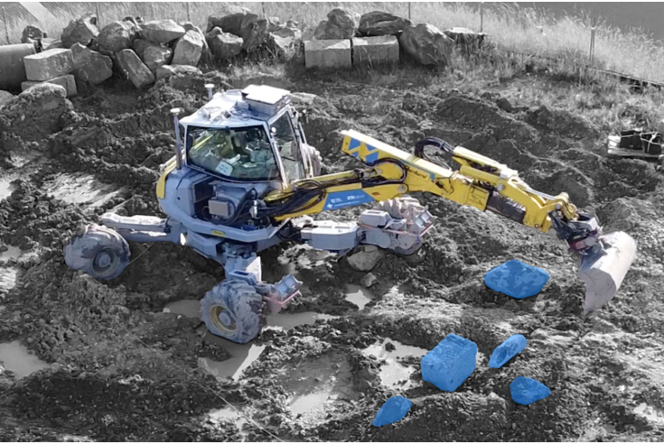
흙을 뜨는 것과
바위를 다루는 것은 다르다
기존 자동 굴착 연구는 주로 토사나 자갈 같은 연속 매질을 다뤘다. 개별 암석을 대상으로 할 때는 정밀한 3D 모델과 전용 그리퍼를 전제하는 경우가 많았다. 그러나 실제 작업장에서 툴 교체는 흐름을 끊고, 암석 제거 뒤 다시 굴착하려면 버킷을 되돌려 달아야 한다.
이 연구는 문제를 단순한 “퍼올리기”가 아니라 표준 버킷을 이용한 개별 물체 조작으로 다시 정의한다. 목표 암석의 자세에 맞춰 굴착기를 정렬하고, 버킷 날을 암석 아래로 진입시킨 뒤, 암석이 빠져나가지 않도록 컬링하며 들어 올려야 한다.
- 표준 버킷 기반 개별 물체 조작 암석을 먼저 정렬하고 버킷 안으로 퍼담은 다음, 말아 올리며 들어 올린다.
- 희소한 3D 지각 SAM2로 RGB 영상의 목표 암석을 분할하고 LiDAR 점을 마스킹한 뒤 20개 점만 정책에 입력한다.
- 토양 분류기 없는 적응 제어 관절 토크와 운동 상태를 통해 단단한 토양에서는 표면 드래깅, 부드러운 토양에서는 직접 관입을 선택한다.
핵심은 더 많은 흙을 담는 궤적이 아니라, 암석의 자세와 저항에 반응하며 정렬과 진입 깊이를 계속 수정하는 데 있다.
카메라에서 밸브까지,
6Hz로 닫힌 제어 고리
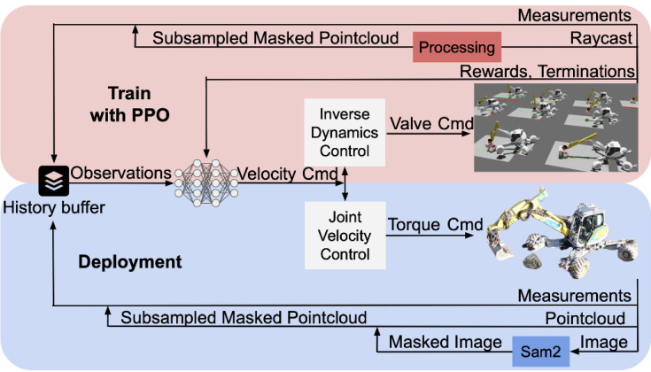
Perception-to-control pipeline
하드웨어와 실행 주기
- Platform
- Menzi Muck M545
12톤 유압 워킹 굴착기 - Perception
- Ouster OS1 Rev 6 LiDAR
ZED 2i 스테레오 카메라 - Machine state
- 관절 IMU·변위 센서
유압 압력 기반 토크 추정 - Segmentation
- 목표 암석에 약 5개 픽셀을 지정해 SAM2 추적 초기화
- Inference
- NVIDIA RTX 4080에서 약 95ms
- Control rate
- 정책 제어 주기 6Hz
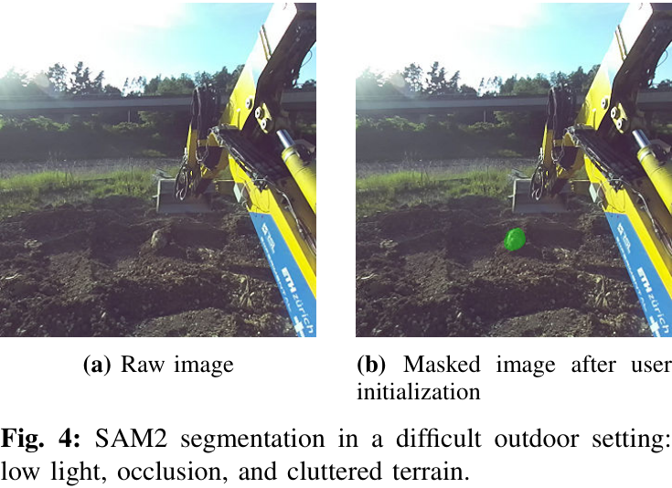
분할은 완전 자동이 아니다. 사용자가 처음에 목표 암석 위 약 5개 픽셀을 지정해야 한다. 이후에는 SAM2가 영상에서 목표를 추적하고, 그 마스크가 LiDAR 점군을 걸러낸다. 이 설계는 조밀한 메시 복원 비용을 피하지만, 목표가 완전히 가려졌을 때 공간적 기억을 제공하지 못한다.
단순화한 흙에서
8년을 연습하다
굴착기·암석·토양 모델
학습 환경은 Isaac Lab의 강체 시뮬레이션을 기반으로 한다. 굴착기에서는 베이스 회전, 붐, 스틱, 텔레스코픽 연장, 버킷 피치의 다섯 관절만 작동시킨다. 암석에는 실제 3D 스캔에서 얻은 50개 형상을 사용했다.
| 모델 요소 | 설정 |
|---|---|
| 암석 형상 | 실제 스캔 기반 50개 형상 |
| 밀도와 질량 | 2,500kg/m³, 에피소드마다 질량 ±10% |
| 주축 크기 | 각각 0.3–1.0m, 0.1–0.5m, 0.2–0.7m 범위에서 무작위화 |
| 암석–토양 마찰 | 마찰계수 0.35–0.60 |
| 굴착기 지지면 마찰 | 마찰계수 0.80 |
| 토양 저항 | Reece의 Fundamental Equation of Earth-Moving 기반 준정적 2D 모델 |
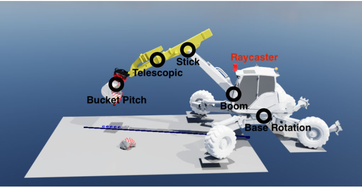
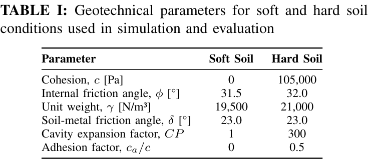
준정적 모델은 입자 기반 토양 모델보다 실제 지면의 변형과 토사 흐름을 덜 충실하게 표현한다. 대신 수천 개 환경을 병렬로 실행할 수 있어 강화학습에 필요한 방대한 경험을 생성한다. 이 선택은 논문 전체의 중요한 교환관계다. 학습 규모를 얻는 대신 실제 토양의 세부 동역학을 포기했다.
관측과 행동
정책 상태에는 관절 위치·속도·토크, 회전 관절 이력, 버킷 자세와 속도, 목표 암석의 20개 3D 점, 이전 행동이 포함된다. 모든 입력은 −1에서 1 사이로 정규화된다. 출력은 다섯 관절의 속도 명령이다.
정렬을 마친 뒤 회전축을 멈춰 작업을 수직 평면에 가깝게 제한하도록 데드밴드를 적용한다.
실제 유압계의 지연을 모사하기 위해 에피소드마다 제어 지연 τdelay ∈ [0, 1.2]초를 샘플링한다. 정책이 지연된 반응을 구분할 수 있도록 관측 이력의 길이는 최대 지연을 포괄하도록 정한다.
보상·종료 조건·학습 설정
보상은 횡방향 정렬, 버킷 접근, 암석 아래 진입, 버킷 내부 포획, 컬링, 목표 높이 인양, 최종 성공을 순차적으로 유도한다. 급격한 행동, 과도한 버킷 속도, 불필요한 회전, 토양 내부 회전, 얕고 정렬되지 않은 퍼담기와 최종 실패에는 벌점을 준다.
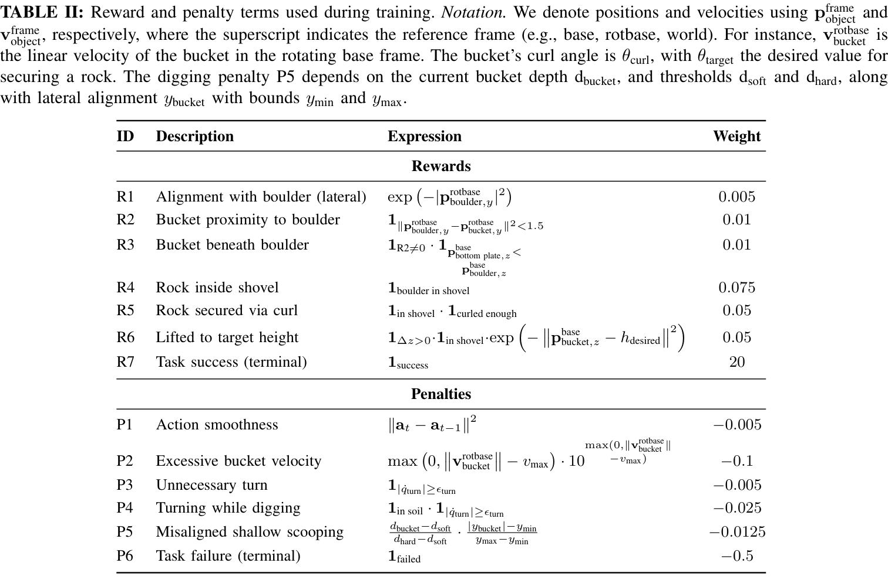
성공은 암석이 버킷 안에 있고, 컬 각도가 0.5rad보다 크며, 기준 높이 0.5m보다 높게 들렸을 때로 정의한다. 제한시간은 29초다. 베이스 속도 0.1m/s 초과, 버킷 속도 1.2m/s 초과, 관절 속도 제한 위반, 암석 낙하 또는 잘못된 받음각은 조기 종료를 유발한다.
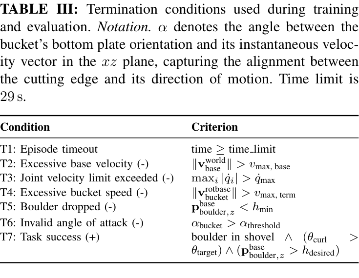
쉬운 인양에서 완전한 굴착으로
커리큘럼은 다섯 단계로 구성된다. 현재 단계의 최근 1,000개 에피소드 성공률이 80%를 넘으면 다음 단계로 이동한다.
연질 토양, 암석을 버킷 앞에 배치한다.
받음각 종료 조건을 활성화한다.
토양 물성을 무작위화한다.
4.5×3×0.4m 초기 영역을 사용한다.
오정렬 벌점으로 퍼담기를 정교화한다.
시뮬레이션 94%,
현장에서는 70%
시뮬레이션: 물체 조작 정책의 우위
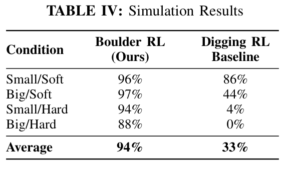
경질 토양의 미학습 대형 암석 형상에서는 87%, 학습 형상에서는 88%였다. 형상 일반화 성능이 거의 유지된 셈이다. 반면 연속 토사 굴착용 Digging RL 기준선은 가장 어려운 대형 암석·경질 토양 조건에서 한 번도 성공하지 못했다.
이 비교가 보여주는 것은 분명하다. “흙을 많이 담는 궤적”만으로는 개별 암석을 안정적으로 포획할 수 없다. 암석의 자세에 반응해 정렬과 버킷 깊이를 수정하는 물체 조작 정책이 별도로 필요하다.
실제 굴착기: 인간과 13%p 차이
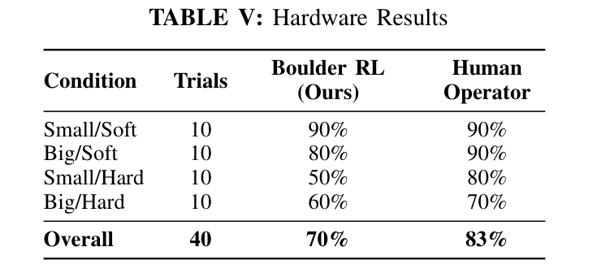
| 시험 조건 | 제안 방법 | 인간 운전자 | 차이 |
|---|---|---|---|
| 소형 / 연질 | 90% | 90% | 0%p |
| 대형 / 연질 | 80% | 90% | −10%p |
| 소형 / 경질 | 50% | 80% | −30%p |
| 대형 / 경질 | 60% | 70% | −10%p |
| 전체 | 70% | 83% | −13%p |
가장 큰 격차는 소형 암석·경질 토양 조건의 −30%p에서 나타났다. 작은 암석은 버킷 뒤로 완전히 가려지기 쉽다. 인간은 마지막으로 본 위치에 대한 공간 기억과 지면 변형을 이용해 조작을 계속하지만, 현재 시스템은 추적이 끊기면 복구하기 어렵다.
단단한 흙에서는
먼저 옆으로 끌었다
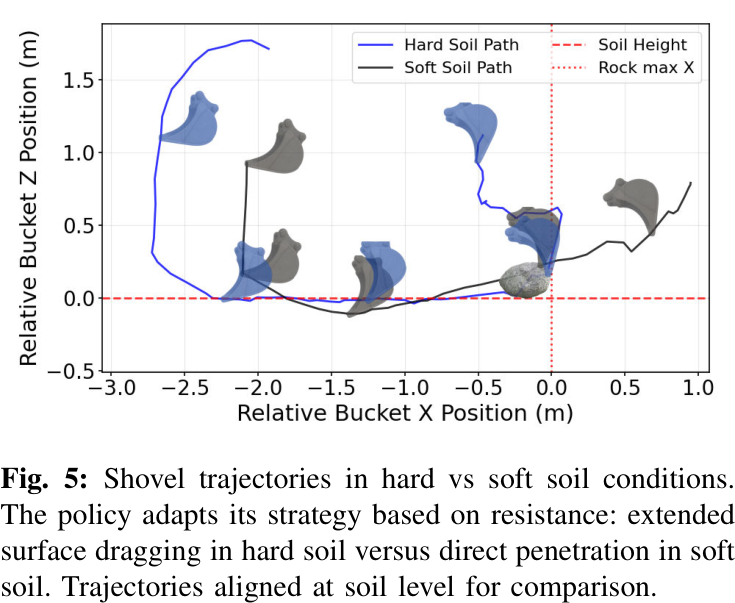
경질 토양에서 버킷의 수평 이동 거리는 연질 토양보다 약 40% 길었다. 정책에 토양 종류를 직접 알려주지 않았다는 점이 중요하다.
Learned soil adaptation
깊은 관입을 피하고 표면 드래깅으로 전환
수평 경로 약 40% 증가
버킷을 더 직접적으로 관입
짧은 퍼담기 경로 사용
연구진은 이를 명시적인 토양 분류기의 결과가 아니라, 초기 관입 시 토크가 커질 때 저항을 피해 표면 드래깅으로 전환한 창발적 행동으로 해석한다. 즉 정책은 “이 흙은 경질이다”라는 라벨을 추정하기보다, 장비가 지금 느끼는 힘에 반응해 궤적을 바꾼다.
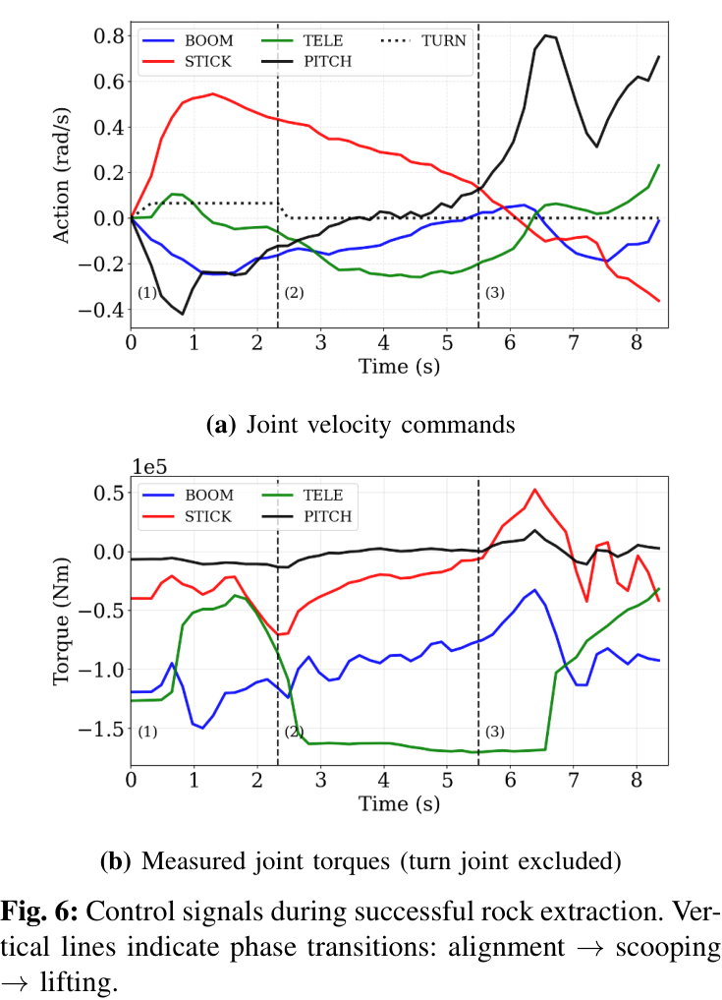
토양을 정확히 분류하지 않아도, 힘을 느끼고 실패를 피하는 행동은 배울 수 있었다.
실패는 대부분
보이지 않는 곳에서 시작됐다
- 지각과 가림 고정된 캐빈 센서는 근접 조작 시 암과 버킷에 의해 가려진다. 작은 암석의 완전 추적 손실이 주요 실패 원인이었다.
- 부분 매립 암석 LiDAR는 노출된 표면만 관측하므로 실제 크기와 매립 깊이를 충분히 표현하지 못한다.
- 모델링되지 않은 토양 동역학 암석–토양 결합, 지면 높이 변화, 버킷 내부 토사 축적과 넘침이 준정적 2D 모델에 충분히 반영되지 않는다.
- 회전 제어 오차 거친 회전 동역학 모델 때문에 대형 암석과의 정렬이 어긋나 버킷 측면에 끼는 경우가 있다.
- 제한적인 실험 범위 실제 시험은 총 40회이며 0.4m와 0.7m 두 크기, 연질·경질 두 조건에 한정됐다. 다양한 지질·경사·다중 암석 환경에서의 재현성은 아직 확인되지 않았다.
- 초기 사람 개입 목표 분할은 사용자가 약 5개 픽셀을 지정한 뒤 시작한다. 따라서 완전 무인 작업은 아니다.
고충실도 입자 기반 토양 시뮬레이션은 일부 격차를 줄일 수 있다. 하지만 저자들은 대규모 병렬 강화학습에 필요한 계산비용이 현재로서는 지나치게 크다고 지적한다. 향후 과제로는 가림을 견디는 시간 모델과 실제 현장 정리에 필요한 다중 암석 시나리오가 제시된다.
다음 개선점은
더 큰 정책이 아닐 수 있다
관측의 시간적 지속성
암석이 가려져도 마지막 상태와 움직임을 바탕으로 위치를 예측하는 시간 모델이 필요하다.
불확실성 기반 복구
확신이 낮아졌을 때 무리하게 조작하지 않고 재관측·재정렬하는 행동을 정책에 포함해야 한다.
공정 수준의 평가
성공률과 함께 작업시간, 에너지, 충격, 재시도 횟수를 측정해야 인간과 실제 생산성을 비교할 수 있다.
연구 결과가 제시하는 설계 원칙
| 관찰된 문제 | 권장 연구 방향 | 기대 효과 |
|---|---|---|
| 가림 중 목표 추적 손실 | 시간적 상태 추정과 가림 중 궤적 예측 | 소형 암석 조작의 연속성 향상 |
| 부분 매립 깊이의 불확실성 | 가시 표면과 힘 피드백을 결합한 잠재 형상 추정 | 버킷 진입 깊이와 받음각 개선 |
| 시뮬레이션에 없는 지면 변화 | 온라인 지형 상태 갱신과 선택적 고충실도 학습 | 시뮬레이션–현실 격차 축소 |
| 단일 암석 중심 평가 | 다중 암석 순서 계획과 재시도 정책 | 실제 토공 공정으로 적용 범위 확대 |
완벽한 세계 모델보다
유용한 반응 행동
이 논문은 전용 그리퍼나 조밀한 3D 복원 없이도, 표준 버킷과 희소 LiDAR·고유감각을 사용하는 강화학습 정책이 실제 12톤 굴착기에서 불규칙 암석을 제거할 수 있음을 보였다. 미학습 형상에 대한 일반화는 강했지만, 실제 성공률을 제한한 핵심은 작은 암석의 가림과 실제 토양 상호작용이었다.
- 표준 굴착 버킷만으로 정렬·퍼담기·인양을 하나의 정책에 통합했다.
- 암석 표면점 20개와 장비의 힘 피드백만으로 토양 적응 행동이 나타났다.
- 후속 연구의 중심은 시간적 지각, 불확실성 기반 복구, 변화하는 지형과 다중 암석 모델링이다.
서지정보와
증거의 경계
- 논문명
- Towards Learning Boulder Excavation with Hydraulic Excavators
- 저자
- Jonas Gruetter, Lorenzo Terenzi, Pascal Egli, Marco Hutter
- 소속
- Robotic Systems Lab, ETH Zurich · Gravis Robotics AG
- 학회
- 2026 IEEE International Conference on Robotics and Automation (ICRA 2026), Vienna, Austria
- 키워드
- Construction Robotics · Field Robotics · Reinforcement Learning
- 원문 기록
- 2026 Towards Learning Boulder Excavation with Hydraulic Excavators.pdf
- 성공률, 장비 사양, 센서 구성, 정책 입력, 학습 설정과 실패 모드는 제공된 논문 요약 및 추출 표·그림을 바탕으로 정리했다.
- 그림과 표의 번호는 이 기사에서의 표시 순서를 따르며, 캡션에 원 논문의 Fig./Table 번호를 별도로 적었다.
- “다음 개선점은 더 큰 정책이 아닐 수 있다”는 절의 연구 제안은 보고된 결과에 근거한 해석이며 논문에서 실험적으로 검증된 결론이 아니다.
- 현장 결과는 총 40회 시험에 기반하므로, 다른 지질·경사·장비·다중 암석 환경으로 일반화할 때는 추가 검증이 필요하다.